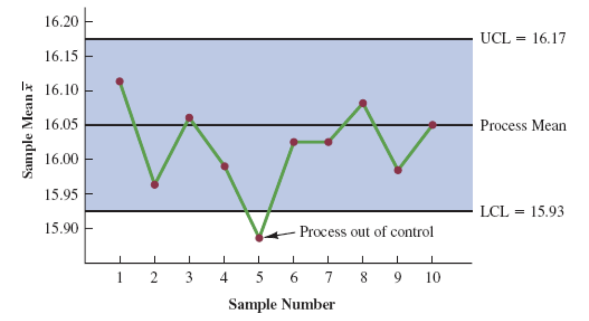
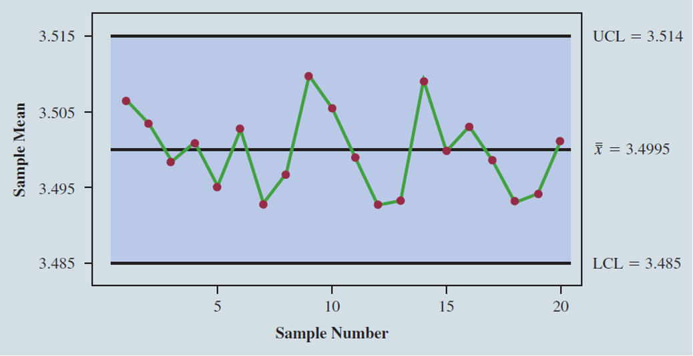
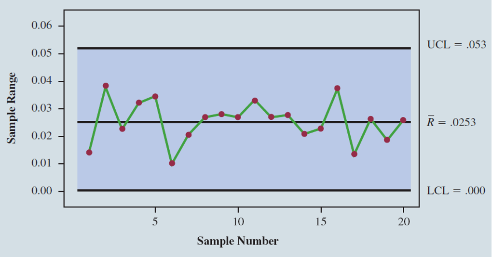
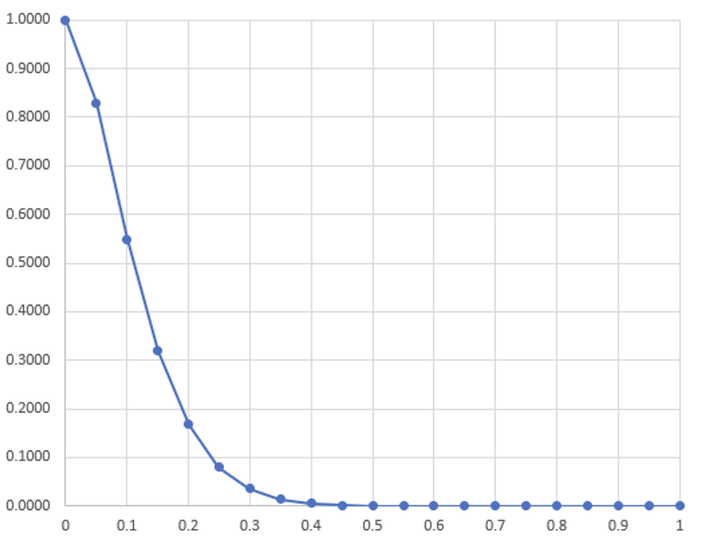

MGMT 30500: Business Statistics
Quality Control
Overview
Philosophies and frameworks
Statistical Process Control (SPC) with Control Charts for
- Process mean (\(\mu\))
- Process variability (Range, R)
- Process proportion of defectives (\(p\))
- Process expected number of defectives (\(np\)) in a sample of size \(n\)
- Acceptance Sampling
- Multiple Sampling Plans
Quality Control
Quality
The American Society for Quality (ASQ) defines quality as:
“the characteristics of a product or service that bear on its ability to satisfy stated or implied needs.”
U.S. Organizations recognize that they must strive for high levels of quality (Car industry in 1980’s).
In addition to managerial philosophy, they have increased the emphasis on statistical methods for monitoring and maintaining quality.
Total Quality
Total Quality (TQ) is a people-focused management system that aims at continual increase in customer satisfaction at continually lower real cost.
- TQ is a total system approach (not a separate work program) and an integral part of high-level strategy. TQ works horizontally across functions (Concurrent engineering).
- TQ involves all employees, top to bottom, and extends backward and forward to include both the supply and customer chains.
- TQ stresses learning and continuous improvement as keys to organizational success.
- Learning -> Improve quality -> Increased productivity -> Lower cost -> Gain in market share -> Stay in business -> Responsibility to society.
Quality Gurus and Philosophies
Quality Gurus and Philosophies
Developed a set of principles that are the basis for what is known today as process control.
Constructed a diagram that would now be recognized as a statistical control chart.
Brought together the disciplines of statistics, engineering, and economics and changed the course of industrial history.
Recognized as the father of statistical quality control.
Quality Gurus and Philosophies

Helped educate the Japanese on quality management shortly after World War II.
Father of modern Total Quality Management: Stressed that the focus on quality must be led by managers.
Developed a list of 14 points he believed represent the key responsibilities of managers.
Japan named its national quality award the Deming Prize in his honor.
Quality Gurus and Philosophies

Helped educate the Japanese on quality management shortly after World War II.
Proposed a simple definition of quality: fitness for use
His approach to quality focused on three quality processes: quality planning, quality control, and quality improvement.
Quality Frameworks
Quality Frameworks: Malcolm Baldrige National Quality Award
Established in 1987 and given by the U.S. president to organizations that judged to be outstanding in:
- Leadership
- Strategy
- Customer measurement, analysis, and knowledge management
- Workforce
- Operations
- Results
The first awards were presented in 1988.
The Award is named for Malcolm Baldrige, who was U.S. Secretary of Commerce from 1981 to 1987.
The U.S. Commerce Department’s National Institute of Standards and Technology (NIST) manages the Award.
Quality Frameworks: ISO 9000 series
A series of five standards published in 1987 by the International Organization for Standardization in Geneva, Switzerland.
The standards describe the need for:
- an effective quality system,
- ensuring that measuring and testing equipment is calibrated regularly,
- maintaining an adequate record-keeping system.
ISO 9000 registration determines whether a company complies with its own quality system.
Quality Frameworks: Six Sigma
Emphasizes the importance of taking measurements on critical quality characteristics.
Focuses more on the process variation than the process mean.
A process is a Six Sigma process if its mean is centered, and the distances between the mean and Upper and Lower Specifications are six times the process’s standard deviation (σ).
Six sigma level of quality means that for every million opportunities, no more than 3.4 defects will occur if the process mean drifts or shifts slightly.
The methodology created to reach this quality goal is referred to as Six Sigma.
Quality Frameworks: Six Sigma

Six Sigma aims for defects to be so minimal that only 3.4 per million occur.
The target is represented as a bell curve centered at the mean (\(\mu\)) with six standard deviations (\(\sigma\)) between the mean and the specification limits.
\[ \text{Defective Rate} = \text{Total Tail Areas} \] \[ \text{Defective Rate} = \text{NORM.S.DIST(-6, TRUE) + {1 - NORM.S.DIST(6, TRUE)}} \approx 0 \]
With Six Sigma, shifts in the process mean are accommodated.
- A shift of 1.5\(\sigma\) still maintains low defect rates.
- This shift leads to a defect rate of approximately 3.4 per million produced.
Quality Frameworks: Service Sector
Quality control is critical in service businesses (e.g., law firms, hotels, airlines, restaurants, and banks).
Focus on customer satisfaction and improving the customer experience.
Services are often intangible, making customer satisfaction subjective and quality measurement challenging.
Quality Terminology
Quality Terminology
Quality assurance refers to the entire system of policies, procedures, and guidelines established by an organization to achieve and maintain quality.
Quality assurance consists of two functions:
- Quality engineering - its objective is to include quality in the design of products and processes and to identify potential quality problems prior to production.
- Quality control consists of making a series of inspections and measurements to determine whether quality standards are being met.
Statistical Methods for Quality
Statistical Methods for Quality
Statistical Design of Experiments (DOEs): For process and product design.
- One-factor ANOVA.
- Factorial design, etc.
Statistical Process Control (SPC): Monitoring and controlling process for stability over time.
Acceptance Sampling: Sorting products into conforming or nonconforming products, and lot sentencing.
Statistical Process Control (SPC)
Statistical Process Control (SPC)
Critical process quality characteristic is inspected and measured.
There will always be variation in the unit-to-unit measurements.
Two types of causes of variation: Common Causes and Assignable Causes.
Common causes are allowed for the time being, but assignable causes need to be removed immediately.
Adjusting a process with only common cause variations will increase process variation. (The Deming’s funnel experiment.)
The goal of SPC is to detect and eliminate the assignable causes as soon as possible, based on samples from the process over time.
Statistical Process Control (SPC): Common Causes
Randomly occurring variations in materials, humidity, temperature, etc.
Variation is natural and unexplained.
Affecting all units/outputs.
Variations the producer cannot control (in the short-term).
Process is in statistical control and hence, does not need adjustment.
Statistical Process Control (SPC): Assignable Causes
- Non-random and identifiable (significant) variations in output due to tools wearing out, operator error, incorrect machine settings of a few machines, poor quality raw material from certain vendors, etc.
- Affecting certain or individual outputs.
- Process is out of control, and the producer can and must control (immediately).
- Corrective action should be taken.
Statistical Process Control (SPC): Applications
- Temperature of a die
- Weights of bags of potato chips of a filling process
- Weekly sales figures
- Customer complaints
- Product responses
- Inventory level
- Absenteeism
- Accidents
- Account receivables
- Process defective rate
SPC vs. Hypothesis Testing
We use SPC to monitor and control the parameters (mean, variability, or proportion) of a process at each time and over time. Based on hypothesis-testing methodology, we have:
\[ H_0: \text{Process is in control } (\mu = \mu_0, \text{ or } R = R_0) \]
\[ H_a: \text{Process is out of control} \]
- The test statistic is the monitoring statistic in SPC: \(\overline{x}\) for process mean, \(\overline{p}\) for process proportion, etc.
Statistical Process Control (SPC): Decisions and Errors
| Decision | State of Production Process | |
|---|---|---|
| H0 True Process in Control | H0 False Process Out of Control | |
| Continue Process | Correct decision | Type II error (allowing an out-of-control process to continue) |
| Adjust Process | Type I error (adjusting an in-control process) | Correct decision |
- Control the Probability of a False Alarm at \(\alpha\) (the significance level).
Statistical Process Control (SPC): Control Charts
SPC uses graphical displays known as control charts to monitor a production process (mean, variability, or percent defectives).

The Center Line (CL) represents what the process parameter value should be when the process is in control (denoted by \(\mu_0\) or \(R_0\)).
The Upper Control Limit (UCL) and Lower Control Limit (LCL) are the two-sided critical values for the monitoring statistic.
- They are chosen so that when the process is in control, there will be a high probability that the monitoring statistic value will be between the two lines.
- They are chosen to allow common causes variation in the process and hence in the monitoring statistic.
- Values outside of the control limits provide strong evidence that the process is out of control.
\(\bar{X}\) Chart: Process Mean and Standard Deviation Known
\(\bar{X}\) Chart: Process Mean and Standard Deviation Known
Example: KJW Packaging
When KJW’s cereal carton filling process is in control, the weight of cartons of cereal filled by the process is normally distributed with a mean of 16.05 ounces and a standard deviation of 0.10 ounces.
- Question: What should be the control limits for \(\bar{X}\) based on a sample of n = 10 observations?
\(\bar{X}\) Chart: Process Mean and Standard Deviation Known
Assume in-control process mean is \(\mu_0\) and standard deviation is \(\sigma\).
For each \(\bar{X}_j\),
\[ \text{UCL} = \mu_0 + 3 \frac{\sigma}{\sqrt{n}} \]
\[ \text{CL} = \mu_0 \]
\[ \text{LCL} = \mu_0 - 3 \frac{\sigma}{\sqrt{n}} \]
where \(\frac{\sigma}{\sqrt{n}}\) is the standard deviation of \(\bar{X}_j\) with a sample size of n.
- 3 is the z-multiplier with 99.97% confidence level, or a false alarm rate of \(\alpha = 0.27\%\).
\(\bar{X}\) Chart: Process Mean and Standard Deviation Known
Example: KJW Packaging
\[ \mu_0 = 16.05, \quad \sigma = 0.10, \quad n = 10 \]
\[ \frac{\sigma}{\sqrt{n}} = \frac{0.10}{\sqrt{10}} = 0.032 \] \[ \text{UCL} = 16.05 + 3(0.032) = 16.146 \]
\[ \text{CL} = 16.05 \] \[ \text{LCL} = 16.05 - 3(0.032) = 15.954 \]
A sample mean based on \(n\) observations outside the limits indicates the process mean is out of control.
\(\bar{X}\) Chart: Process Mean and Standard Deviation Known
Example: KJW Packaging

Note that the fifth sample shows there is strong evidence that the process is out of control.
It indicates that assignable causes of output variation are present and that underfilling is occurring.
\(\bar{X}\) Chart: Process Mean and Standard Deviation Unknown
\(\bar{X}\) Chart: Process Mean and Standard Deviation Unknown
Assume the in-control process mean and standard deviation are unknown.
- They need to be estimated from an in-control process.
Example: Jensen Computer Supplies Problem
JCS manufactures 3.5-inch-diameter solid state drives. It wants to develop an X-bar (for process mean) and Range charts (for process variability) based on twenty samples of 5 drives each.
\(\bar{X}\) Chart: Process Mean and Standard Deviation Unknown
Example: Jensen Computer Supplies Problem
Data and Sample Summary Statistics
| Sample | Observation 1 | Observation 2 | Observation 3 | Observation 4 | Observation 5 | Mean | Range |
|---|---|---|---|---|---|---|---|
| 1 | 3.5056 | 3.5086 | 3.5144 | 3.5009 | 3.5030 | 3.5065 | 0.0135 |
| 2 | 3.4882 | 3.5085 | 3.4884 | 3.5250 | 3.5031 | 3.5026 | 0.0368 |
| 3 | 3.4897 | 3.4898 | 3.4995 | 3.5130 | 3.4969 | 3.4978 | 0.0233 |
| … | … | … | … | … | … | … | … |
| 18 | 3.4959 | 3.4823 | 3.4964 | 3.5082 | 3.4871 | 3.4940 | 0.0259 |
| 19 | 3.4878 | 3.4864 | 3.4960 | 3.5070 | 3.4894 | 3.4933 | 0.0259 |
| 20 | 3.4969 | 3.5144 | 3.5053 | 3.4985 | 3.4885 | 3.5007 | 0.0259 |
| Average | 3.4995 | 0.0253 |
- Table of sample observations with 5 observations per sample and calculated means and ranges.
\(\bar{X}\) Chart: Process Mean and Standard Deviation Unknown
For each \(\bar{X}_j\),
\[ \text{UCL} = \bar{\bar{X}} + A_2 \bar{R} \]
\[ \text{CL} = \bar{\bar{X}} \]
\[ \text{LCL} = \bar{\bar{X}} - A_2 \bar{R} \]
where:
- \(\bar{\bar{X}}\) = overall sample mean (e.g., 3.4995)
- \(\bar{R}\) = average range (e.g., 0.0253)
- \(A_2\) = constant depending on \(n\) (from the “Factors for Control Charts” table)
Factors for \(\bar{X}\) Control Chart
The American Society for Testing and Materials Manual on Presentation of Data and Control Chart Analysis provides valuses for \(d_2\) for different sample sizes (\(n\)) as shown below:
| n | \(d_2\) | \(A_2\) | \(d_3\) | \(D_3\) | \(D_4\) |
|---|---|---|---|---|---|
| … | … | … | … | … | … |
| 5 | 2.326 | 0.577 | 0.864 | 0 | 2.114 |
| 6 | 2.534 | 0.483 | 0.848 | 0 | 2.004 |
| 7 | 2.704 | 0.419 | 0.833 | 0.076 | 1.924 |
| 8 | 2.847 | 0.373 | 0.820 | 0.136 | 1.864 |
| 9 | 2.970 | 0.337 | 0.808 | 0.184 | 1.816 |
| 10 | 3.078 | 0.308 | 0.797 | 0.223 | 1.777 |
| … | … | … | … | … | … |
- \(d_2\) and \(d_3\): Constants used for range calculations.
- \(A_2\): Used in \(\bar{X}\) charts for control limits.
- \(D_3\) and \(D_4\): Constants for the R-chart control limits.
Factors for \(\bar{X}\) Control Chart: Explanation
n: The sample size, or the number of observations within each subgroup.
\(d_2\): A constant used to estimate the mean of the range (\(\bar{R}\)) when the sample size \(n\) is known.
\(A_2\): A constant for calculating control limits for the \(\bar{X}\) (X-bar) chart:
\[ \text{UCL} = \bar{\bar{X}} + A_2 \bar{R} \]
and
\[ \text{LCL} = \bar{\bar{X}} - A_2 \bar{R} \]
where \(\bar{\bar{X}}\) is the mean of sample means, and \(\bar{R}\) is the average range.
\(d_3\): A constant related to the standard deviation of the range distribution, useful for control limits on range charts.
\(D_3\): Used for the Lower Control Limit (LCL) on the R-chart:
\[ \text{LCL} = D_3 \times \bar{R} \]
For small sample sizes, \(D_3\) is often zero, indicating no lower control limit.
- \(D_4\): Used for the Upper Control Limit (UCL) on the R-chart:
\[ \text{UCL} = D_4 \times \bar{R} \]
Adjusts the upper limit based on sample size, providing a threshold for large ranges.
\(\bar{X}\) Chart: Process Mean and Standard Deviation Unknown
Given \(\bar{X} = 3.4995\), \(\bar{R} = 0.0253\), \(n = 5\),
\[ \text{UCL} = \bar{X} + A_2 \bar{R} = 3.4995 + 0.577(0.0253) = 3.514 \]
\[ \text{CL} = \bar{X} = 3.4995 \]
\[ \text{LCL} = \bar{X} - A_2 \bar{R} = 3.4995 - 0.577(0.0253) = 3.485 \]
\(\bar{X}\) Chart: Process Mean and Standard Deviation Unknown

Graph showing the \(\bar{X}\) chart with control limits at 3.485 and 3.514.
Conclusion: Process mean was in control in each time period.
\(\bar{X}\) Chart: Process Mean and Standard Deviation Unknown
In case the process is out-of-control for some samples, exclude these samples and re-calculate the CL, UCL, and LCL to re-check the process.
This approach applies to other types of control charts as well.
\(R\) Chart for Process Variability
\(R\) Chart for Process Variability
Assume the in-control process mean and standard deviation are unknown.
Because the control limits for the \(\bar{X}\) chart depend on the value of the average range (\(\bar{R}\)), these limits will not have much meaning unless the process range is in control.
In practice, the \(R\) chart is usually constructed before the \(\bar{X}\) chart.
- If the \(R\) chart indicates that the process variability is in control, then the \(\bar{R}\) is used when constructing the \(\bar{X}\) chart.
The plotting statistic is the Sample Range, \(R_j\).
\(R\) Chart for Process Variability
For each \(R_j\),
\[ \text{UCL} = D_4 \bar{R} \]
\[ \text{CL} = \bar{R} \]
\[ \text{LCL} = D_3 \bar{R} \]
where:
\(\bar{R}\) = average range
\(D_3, D_4\) = constants that depend on \(n\); refer to the “Factors for Control Charts” table.
\(R\) Chart for Process Variability
Example: Jensen Computer Supplies Problem
Given: - \(\bar{\bar{X}} = 3.4995\), \(\bar{R} = 0.0253\), \(n = 5\)
Calculations:
\[ \text{UCL} = D_4 \bar{R} = 2.114(0.0253) = 0.053 \]
\[ \text{CL} = \bar{R} = 0.0253 \]
\[ \text{LCL} = D_3 \bar{R} = 0(0.0253) = 0 \]
\(R\) Chart for Process Variability

- Conclusion: The process variability was in control in each sample.
Attributes Control Charts
Attributes Control Charts
An attributes control chart is used if the quality of the output is measured in terms of discrete/counting data such as the number of defective units (\(X\)) in a sample, etc.
\(X\) is assumed to follow a Binomial distribution with a defective rate (proportion of “success”), \(p\). The expected value of \(X\) is \(np\).
\(p\) Chart: Used to monitor \(p\). The monitoring statistic at time \(j\) is the sample proportion \(\overline{p_j}\).
\(np\) Chart: Used to monitor the expected number of defectives in a sample of size \(n\), \(np\). The monitoring statistic at time \(j\) is \(X_j\).
\(p\) Chart for Process Proportion
\(p\) Chart for Process Proportion
Assume the in-control process proportion is known as \(p_0\).
For each \(\bar{p}_j\), \[ \text{UCL} = p_0 + 3\sigma_{\overline{p}} \]
\[ \text{CL} = p_0 \]
\[ \text{LCL} = p_0 - 3\sigma_{\overline{p}} \]
where
\[ \sigma_{\overline{p_j}} \approx \sqrt{\frac{p_0(1 - p_0)}{n}} \]
assuming \(np_0 \geq 5\) and \(n(1 - p_0) \geq 5\).
- Note: If computed LCL is negative, set LCL = 0.
\(p\) Chart for Process Proportion
Assume the in-control process proportion is unknown.
Example: Automated mail-sorting process.
The automated mail sorting process in a post office scans the zip codes on the letters and diverts them to the proper carrier route. Suppose a sample of 200 letters is selected each hour for 24 hours to establish control limits for a p chart, where \(p\) is the proportion of incorrectly sorted letters.
\(p\) Chart for Process Proportion
Sample Data
| Sample | Sample Size | Number of Incorrects (\(X_j\)) | Sample Proportion (\(\bar{P}_j\)) |
|---|---|---|---|
| 1 | 200 | 6 | 0.03 |
| 2 | 200 | 2 | 0.01 |
| 3 | 200 | 0 | 0.00 |
| … | … | … | … |
| 22 | 200 | 2 | 0.01 |
| 23 | 200 | 0 | 0.00 |
| 24 | 200 | 2 | 0.01 |
| Total | 4800 | 104 |
- Sample: Identifies each sample in the sequence.
- Sample Size (\(n\)): Total number of observations in each sample. Here, each sample size is 200.
- Number of Incorrects (\(X_j\)): Number of incorrect observations in each sample.
- Sample Proportion (\(\bar{P}_j\)): Proportion of incorrect observations in each sample, calculated as \(X_j / n\).
\[ \text{Estimated overall defective rate} = \overline{p} = \frac{\text{Total number of incorrects}}{\text{Total sample size}} = \frac{104}{4800} = 0.0217 \]
\(p\) Chart for Process Proportion
Example: Automated mail-sorting process
\(\overline{p} = 0.0217\)
\[ \sigma_{\overline{p_j}} \approx \sqrt{\frac{\overline{p}(1 - \overline{p})}{n}} = \sqrt{\frac{0.0217(1 - 0.0217)}{200}} = 0.0103 \]
- UCL = \(\overline{p} + 3\sigma_{\overline{p}} = 0.0217 + 3(0.0103) = 0.0526\)
- CL = \(\overline{p} = 0.0217\)
- LCL = \(\overline{p} - 3\sigma_{\overline{p}} = 0.0217 - 3(0.0103) = -0.0092 \rightarrow 0\)
\(p\) Chart for Process Proportion

The process is out-of-control in Hour 8.
\(np\) Chart for Expected Number of Defectives
\(np\) Chart for Expected Number of Defectives
An \(np\) chart is a control chart developed for the number of defective items in a sample. In this case, \(n\) is the sample size and \(p\) is the probability of observing a defective item when the process is in control.
For each \(X_j\), \[ UCL = np + 3\sqrt{np(1 - \overline{p})} \]
\[ CL = np \]
\[ LCL = np - 3\sqrt{np(1 - \overline{p})} \]
assuming \(np \geq 5\) and \(n(1 - \overline{p}) \geq 5\).
Note: If computed LCL is negative, set LCL = 0.
Interpretation of Control Charts
The location and pattern of points in a control chart enable us to determine, with a small probability of error, whether a process is in statistical control.
A primary indication that a process may be out of control is a data point outside the control limits.
Certain patterns of points within the control limits can be warning signals of quality problems (Nelson’s 8 rules):
- A large number of points on one side of the center line (9 points).
- Six or seven points in a row that indicate either an increasing or decreasing trend.
Acceptance Sampling
Acceptance Sampling
Acceptance sampling is a statistical method that enables us to base the accept-reject decision on the results of inspection of a sample of items from the lot.
The items of interest can be incoming shipments of raw materials or purchased parts as well as finished goods from final assembly (End-of-line inspection).
Acceptance sampling has advantages over 100% inspection including:
- Usually less expensive.
- Less product damage due to less handling.
- Fewer inspectors required.
- Provides the only approach possible if destructive testing must be used.
Acceptance Sampling Procedure

Acceptance Sampling vs HT
- Acceptance sampling is based on hypothesis-testing methodology.
\[ H_0: \text{Good-quality lot} \] \[ H_a: \text{Poor-quality lot} \]
| Decision/State of the Lot | \(H_0\) True Good-Quality Lot | \(H_0\) False Poor-Quality Lot |
| Accept the Lot | Correct decision | Type II error (accepting a poor-quality lot) |
| Reject the Lot | Type I error (rejecting a good-quality lot) | Correct decision |
Recall: Binomial Distribution
Binomial Probability Function for Acceptance Sampling
\[ X \sim \text{Binomial}(n, p) \]
\[ P(X = x) = f(x) = \frac{n!}{x!(n - x)!} p^x (1 - p)^{(n - x)} \]
\[ P(X \leq x) = f(0) + \dots + f(x) \]
where
- \(n\) = the sample size
- \(p\) = the proportion of defective items in the lot
- \(x\) = the number of defective items in the sample \(n\)
- \(f(x)\) = the probability of \(x\) defective items in the sample
- Excel Formula:
=BINOM.DIST(# successes trials, # trials, probability of success, TRUE)
Acceptance Sampling: Example KALI, Inc.
KALI, Inc. manufactures home appliances that are marketed under a variety of trade names. It uses acceptance sampling plan to monitor the quality of overload protectors. Suppose a sample of 15 items is selected from each incoming shipment or lot and the policy is to accept a lot if at most one defective item is found in the sample.
Find the probability of accepting the lot when the defective rate of the incoming lot is 5%.
Acceptance Sampling: Example KALI, Inc.
A simple lot acceptance sampling plan is determined by \((n, c)\), where \(n\) is the sample size, and \(c\) is the acceptance number such that if the number of defectives in the sample is less than or equal to \(c\) (i.e., \(X \leq c\)), the entire lot is accepted.
\[ n = 15, \quad c = 1. \]
When the defective rate of the incoming lot is 5%, \(p = 0.05\), the probability of accepting the lot is:
\[ \begin{align*} P(\text{Accept Lot}) & = P(X \leq 1) = f(0) + f(1)\\ & = \frac{15!}{0!(15 - 0)!} \cdot 0.05^0 (1 - 0.05)^{15 - 0} + \frac{15!}{1!(15 - 1)!} \cdot 0.05^1 (1 - 0.05)^{15 - 1}\\ & = 0.4633 + 0.3658 \\ & = 0.8290 \end{align*} \]
For its turn, the the probability of rejecting the lot is:
\[ P(\text{Reject Lot}) = 1 - 0.8290 = 0.1710 \]
Selecting an Acceptance Sampling Plan
Selecting an Acceptance Sampling Plan: Example KALI, Inc.
In formulating a plan, managers must consider the following:
Producer’s risk: Probability of rejecting a lot with an acceptable defective rate.
Consumer’s risk: Probability of accepting a lot with an unacceptable defective rate.
Selecting an Acceptance Sampling Plan: Example KALI, Inc.
| p | Acceptance Probability |
|---|---|
| 0.00 | 1.0000 |
| 0.05 | 0.8290 |
| 0.10 | 0.5490 |
| 0.15 | 0.3186 |
| 0.20 | 0.1671 |
| 0.25 | 0.0802 |
| 0.30 | 0.0353 |
| 0.35 | 0.0142 |
| 0.40 | 0.0052 |
| 0.45 | 0.0017 |
| 0.50 | 0.0005 |
| 0.55 | 0.0001 |
| 0.60 | 0.0000 |
| 0.65 | 0.0000 |
| 0.70 | 0.0000 |
| 0.75 | 0.0000 |
| 0.80 | 0.0000 |
| 0.85 | 0.0000 |
| 0.90 | 0.0000 |
| 0.95 | 0.0000 |
| 1.00 | 0.0000 |
Acceptance Probability Plot

The plot presents the probability of accepting the lot (y-axis) based on the percent of defective items in the lot (x-axis).
Selecting an Acceptance Sampling Plan: Example KALI, Inc.
In formulating a plan, managers must specify the following:
\[ \begin{cases} p_0 = \text{Maximum acceptable defective rate (under $H_0$)} \\ \alpha = \text{The Producer's Risk: }\text{the probability that a lot with defective rate $p_0$ will be rejected} \\ \quad \end{cases} \]
\[ \begin{cases} p_1 = \text{Minimum unacceptable defective rate (under $H_a$)} \\ \beta = \text{The Consumer's Risk: } \text{the probability that a lot with defective rate $p_1$ will be accepted} \\ \quad \end{cases} \]
Selecting an Acceptance Sampling Plan: Example KALI, Inc.
A simple sampling plan with \((n, c)\) is selected when it comes close to meeting both the \(\alpha\) and \(\beta\) requirements specified.
Example: For the purpose of illustration, suppose we require:
If \(p_0 = 0.03\), \(\alpha = \Pr(\text{Reject the lot} \mid p_0 = 0.03) = 8\%\) (Producer’s Risk)
If \(p_1 = 0.15\), \(\beta = \Pr(\text{Accept the lot} \mid p_1 = 0.15) = 4\%\) (Consumer’s Risk)
Selecting an Acceptance Sampling Plan: Example KALI, Inc.
For \((n, c) = (15, 0)\):
\[ \begin{align*} \text{Producer's risk} & = P(\text{Reject the lot} \mid p = 0.03) = P(X > 0 \mid p = 0.03) \\ & = 1 - P(X \leq 0 \mid p = 0.03) \\ & = 1 - \text{Bin}(15, 0.03) = 1 - 0.633 = 0.367 \quad \text{(Too high)} \end{align*} \]
\[ \begin{align*} \text{Consumer's risk} & = P(\text{Accept the lot} \mid p = 0.15) = P(X \leq 0 \mid p = 0.15) \\ & = \text{Bin}(15, 0.15) = 0.087 \quad \text{(Close)} \end{align*} \]
Selecting an Acceptance Sampling Plan: Example KALI, Inc.
Producer’s Risk: The calculated producer’s risk is 36.7%, which is significantly higher than the acceptable level of 8%. This means there is a high probability that a lot with an acceptable defect rate (\(p_0 = 0.03\)) will be incorrectly rejected, resulting in an unacceptably high risk for the producer.
Consumer’s Risk: The consumer’s risk is 8.7%, which is close to the acceptable level of 4%. This indicates that the plan is nearly adequate in terms of the consumer’s risk, but it is still slightly above the target.
Conclusion: The acceptance sampling plan \((n, c) = (15, 0)\) is not acceptable because it does not adequately meet the producer’s risk requirement. The producer’s risk is too high, resulting in a high probability of rejecting acceptable lots.
Recommendation: Adjustments to the sampling plan are needed to better balance both the producer’s and consumer’s risk requirements. This may involve increasing the acceptance number \(c\) or adjusting the sample size \(n\).
Multiple Sampling Plans
Multiple Sampling Plans
A multiple sampling plan uses two or more stages of sampling.
At each stage, decisions include:
- Stopping and accepting the lot,
- Stopping and rejecting the lot,
- Continuing sampling.
Multiple sampling plans can reduce total sample size while maintaining Type I and Type II error levels.
Multiple Sampling Plans: Two Stage Acceptance Sampling Plan Procedure

Stage 1:
- Take an initial sample of \(n_1\) items.
- Find the number of defectives \(x_1\) in this sample.
- Decision criteria:
- If \(x_1 \leq c_1\): Accept the lot.
- If \(x_1 \geq c_2\): Reject the lot.
- If \(c_1 < x_1 < c_2\): Proceed to Stage 2.
Stage 2:
- Take an additional sample of \(n_2\) items.
- Find the number of defectives \(x_2\) in this second sample.
- Decision criteria:
- If \(x_1 + x_2 \leq c_3\): Accept the lot.
- If \(x_1 + x_2 > c_3\): Reject the lot.
Acceptance Criteria: The lot is accepted if the defectives in Stage 1 are within \(c_1\), or if the combined defectives in both stages are within \(c_3\).
Rejection Criteria: The lot is rejected if the defectives in Stage 1 exceed \(c_2\), or if the combined defectives in both stages exceed \(c_3\).
Summary
Summary
Some key takeaways from this session:
Importance of Quality Control: Quality control is essential for ensuring products meet customer expectations and can enhance a company’s competitiveness. Tools like control charts, SPC, and acceptance sampling are critical.
Statistical Process Control (SPC): SPC uses control charts to monitor and maintain process stability by identifying common and assignable causes of variation.
Control Charts: Used to monitor different quality metrics, such as the mean (\(\bar{X}\)), variability (R-chart), and defect proportion (p-chart). Control limits are established to detect out-of-control conditions and require adjustments only for assignable causes.
Acceptance Sampling: Provides a practical method for lot quality decisions without inspecting every item. It balances producer’s and consumer’s risks by setting limits on acceptable defect rates.
Multiple Sampling Plans: These plans, including the two-stage acceptance sampling plan, can minimize sample size while maintaining error controls, improving efficiency over single-stage plans.